1020E10 oil seal cover (one) - l or r - on counter-rotating shafts - r + r and replace seals
- Path
- Procedures > 10 ENGINE > 1020 CRANKCASE SUMP AND COVERS > 1020E oil seals on counter-rotating shafts > 1020E10 oil seal cover (one) - l or r - on counter-rotating shafts - r + r and replace seals
- Kind
- repair procedure (removal / refitting; the operation number is the code)
- Applies to
- engines: 2.0 TS; all production periods
- Interactive page
- https://sloeber94.github.io/elrnDB-a147/en/#/3024931
Applies to: engines: 2.0 TS; all production periods
 Removing
Removing
 Refitting
RefittingPosition the vehicle on the ramp.
Ensure that the ignition key is in the stop OFF, then disconnect the battery negative terminal.
 | Name | Connector |
|---|---|---|
- | Battery |
Proceed with the removal 4450B10 Front WHEEL (one) - R.R. (Right side).
Proceed with the removal 7055B54 under-engine guard - r r .
Proceed with the removal 7055B64 Engine compartment DUST shield in front wheel arch (one), left or right - R.R. (Right side).
Proceed with the removal 1092G10 single engine belt r r .
Proceed with the removal 1092A10 Crankshaft services PULLEY - R.R. .
Proceed with the removal 1092G20 engine component single belt fixed tensioner - one - r + r .
Proceed with the removal 1092G14 engine component single belt mobile tensioner - r + r .
Proceed with the removal 1032D12 timing system protective cover(s) - r + r .
Proceed with the removal 1092E10 counter-rotating shaft drive toothed belt - r + r .
Proceed with the removal 1016A40 ignition coil cover on cylinder head- r+r .
Proceed with the removal 5510C14 ignition coil/s - r+r .
Proceed with the removal 1016A20 single cam cover - r + r and replace gasket .
Proceed with the removal 1032B10 toothed timing belt - r + r for timing adjustment or replacement .
For the left counter-balance shaft cover, proceed as follows.
1. Undo the bolt (1a) for the left counter-balance shaft pulley using the tool (1b) for counter-torque.
 | Name | Country |
|---|---|---|
1b | Counter-torque | 1.820.286.000 |
2. Remove the left counter-balance shaft pulley.
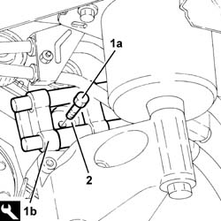
Applies to: engines: 2.0 TS; all production periods
1. Undo the bolt (1a) and remove the fixed timing belt tensioner (1b).
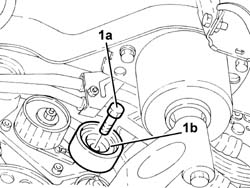
Applies to: engines: 2.0 TS; all production periods
1. Undo the nut (1a) and remove the counter-balance shaft drive belt tensioner (1b).
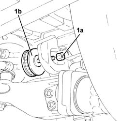
Applies to: engines: 2.0 TS; all production periods
1. Undo the bolts (1a) and remove the left counter-balance shaft cover (1b) complete with oil seal and O-Ring.
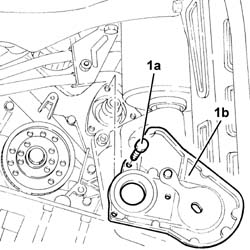
Applies to: engines: 2.0 TS; all production periods
For the right counter-balance shaft cover, proceed as follows.
1. Undo the nut (1a) and remove the timing drive belt moving tensioner (1b).
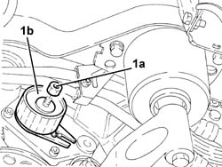
Applies to: engines: 2.0 TS; all production periods
Undo the bolt (1a) for the right counter-balance shaft pulley using the tool (1b) for counter-torque.
| Name | Country |
|---|---|---|
1b | Counter-torque | 1.820.286.000 |
2. Remove the right counter-balance shaft pulley.
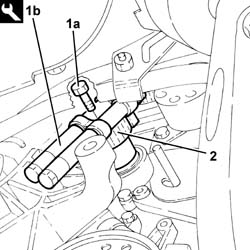
Applies to: engines: 2.0 TS; all production periods
1. Undo the bolts (1a) and remove the right counter-balance shaft cover (1b), complete with oil seal and O-Ring.
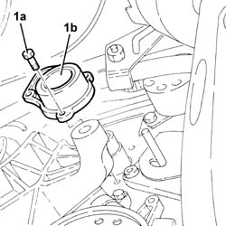
Applies to: engines: 2.0 TS; all production periods
Refitting
RemovingFor the right counter-balance shaft cover, proceed as follows.
1. Place the right counter-balance shaft cover (1a), complete with oil seal and new O-Ring back in its housing, then secure it by tightening the bolts (1b) to the recommended torque.
 | Fastening | Component | Ø | Value (daNm) |
|---|---|---|---|---|
1b | Bolt | COUNTER ROTATING SHAFT FRONT COVER | M6 | (Engine crankcase side) 0.8 ÷ 1.0 |
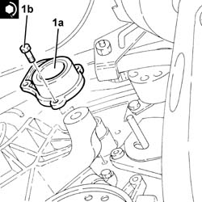
Applies to: engines: 2.0 TS; all production periods
1. Place the right counter-balance shaft pulley (1a) back in its housing and secure it by tightening the bolt (1b) to the recommended torque using the tool (1c) for counter-torque.
| Fastening | Component | Ø | Value (daNm) |
|---|---|---|---|---|
1b | Bolt | COUNTER-ROTATING SHAFT PULLEY | M10 | (Counter balance shaft side) 4.5 ÷ 5.5 |
| Name | Country |
|---|---|---|
1c | Counter-torque | 1.820.286.000 |
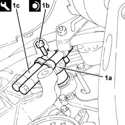
Applies to: engines: 2.0 TS; all production periods
Fit the timing belt mobile tensioner and fix it using the nut without tightening it.
For the left counter-balance shaft cover, proceed as follows.
1. Place the left counter-balance shaft cover (1a), complete with oil seal and new O-Ring, back in its housing, then secure it by tightening the bolts (1b) to the recommended torque.
| Fastening | Component | Ø | Value (daNm) |
|---|---|---|---|---|
1b | Bolt | COUNTER ROTATING SHAFT FRONT COVER | M6 | (Engine crankcase side) 0.8 ÷ 1.0 |
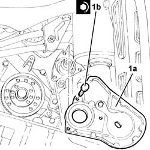
Applies to: engines: 2.0 TS; all production periods
Place the counter-balance shaft belt tensioner back in its housing and secure it without tightening the nut.
1. Place the timing fixed tensioner (1a) back in its housing and secure it by tightening the bolt (1b) to the recommended torque.
| Fastening | Component | Ø | Value (daNm) |
|---|---|---|---|---|
1b | Bolt | FIXED TENSIONER | M8 | 2.3 ÷ 2.8 |
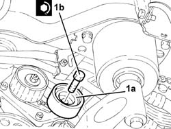
Applies to: engines: 2.0 TS; all production periods
1. Place the left counter-balance shaft pulley (1a) back in its housing and secure it by tightening the bolt (1b) to the recommended torque using the tool (1c) for counter-torque.
| Fastening | Component | Ø | Value (daNm) |
|---|---|---|---|---|
1b | Bolt | COUNTER-ROTATING SHAFT PULLEY | M10 | (Counter balance shaft side) 4.5 ÷ 5.5 |
| Name | Country |
|---|---|---|
1c | Counter-torque | 1.820.286.000 |
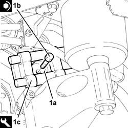
Applies to: engines: 2.0 TS; all production periods
PROCEED as follows for both counter-balance shaft covers
Proceed with the refitting 1032B10 toothed timing belt - r + r for timing adjustment or replacement .
Proceed with the refitting 1016A20 single cam cover - r + r and replace gasket .
Proceed with the refitting 5510C14 ignition coil/s - r+r .
Proceed with the refitting 1016A40 ignition coil cover on cylinder head- r+r .
Proceed with the refitting 1092E10 counter-rotating shaft drive toothed belt - r + r .
Proceed with the refitting 1032D12 timing system protective cover(s) - r + r .
Proceed with the refitting 1092G14 engine component single belt mobile tensioner - r + r .
Proceed with the refitting 1092G20 engine component single belt fixed tensioner - one - r + r .
Proceed with the refitting 1092A10 Crankshaft services PULLEY - R.R. .
Proceed with the refitting 1092G10 single engine belt r r .
Proceed with the refitting 7055B64 Engine compartment DUST shield in front wheel arch (one), left or right - R.R. (Right side).
Proceed with the refitting 7055B54 under-engine guard - r r .
Proceed with the refitting 4450B10 Front WHEEL (one) - R.R. (Right side).
Connect the battery terminal (-).
Remove the car from the ramp.
Topics linked from this page (14)
- 1016A20 single cam cover - r + r and replace gasket
- 1016A40 ignition coil cover on cylinder head- r+r
- 1032B10 toothed timing belt - r + r for timing adjustment or replacement
- 1032D12 timing system protective cover(s) - r + r
- 1092A10 Crankshaft services PULLEY - R.R.
- 1092E10 counter-rotating shaft drive toothed belt - r + r
- 1092G10 single engine belt r r
- 1092G14 engine component single belt mobile tensioner - r + r
- 1092G20 engine component single belt fixed tensioner - one - r + r
- 4450B10 Front WHEEL (one) - R.R.
- 5510C14 ignition coil/s - r+r
- 7055B54 under-engine guard - r r
- 7055B64 Engine compartment DUST shield in front wheel arch (one), left or right - R.R.
- A1B Battery ( Connectors )